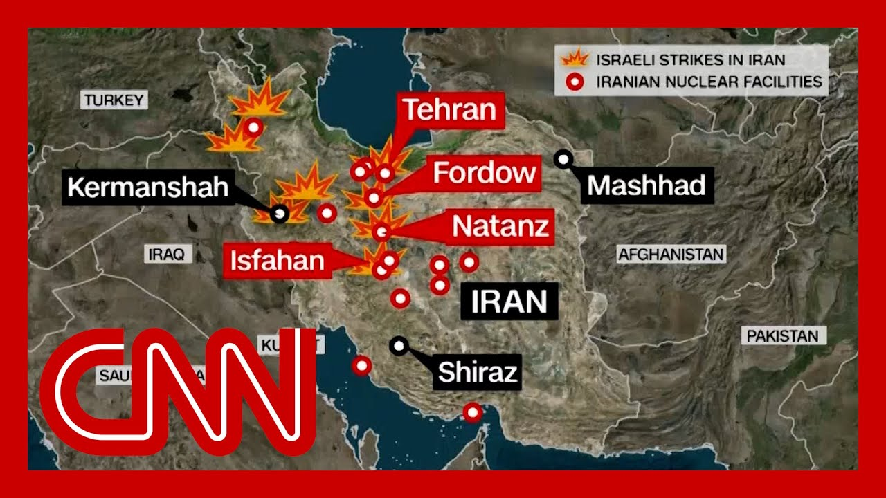

【"无条件投降"：消息称特朗普倾向对伊朗采取军事打击，并以此警告伊朗】
Summary: President Trump is weighing a critical decision on potential U.S. military action against Iran amid shifting public rhetoric and private deliberations with advisors, while regional tensions escalate and Israel pushes for stronger U.S. involvement.
摘要： 特朗普总统正权衡是否对伊朗采取军事行动，其公开表态与私下讨论出现转变；与此同时，地区紧张局势升级，以色列敦促美国加强介入。

⏱️ Estimated Reading Time: 14 min
📚 六级生词 📚 雅思生词 📚 托福生词 📚 专八生词 📚 SAT生词 📚 考研生词 📚 GRE生词 📚 高考生词
President Trump is faced with what could be the most important decision of his second term.
特朗普总统正面临其第二任期可能最重要的决定。
Will he order the United States military to bo Just moments ago, the president wrapped a meeting with his national security team in the Situation Room as he weighs this very question.
他是否会命令美军采取行动？就在刚才，总统结束了与国家安全团队在战情室的会议，正权衡这一问题。
And although President Trump has been publicly pushing for a deal with Iran, two officials familiar with the tell CNN that he's increasingly to using the U.S. military in Iran.
尽管特朗普总统公开推动与伊朗达成协议，但两位知情官员告诉CNN，他越来越倾向于对伊朗动用美军。
And publicly, his tone seems to be changing very quickly.
公开场合中，他的语气似乎正在迅速转变。
So this afternoon, he posted thi We know exactly where the so-called supreme leader is hiding.
今天下午他发文称：我们清楚所谓最高领袖的藏身之处。
He is an easy target, but is saf We are not going to take him out Kill exclamation point.
他是个容易的目标，但目前安全。我们暂不会消灭他！
At least not for now.
至少现在不会。
But the president added, our patience is wearing thin.
但总统补充道：我们的耐心正在耗尽。
He then followed up that with th unconditional surrender, implying that that's the solution for Iran.
他随后提出"无条件投降"，暗示这是伊朗的出路。
That, of course, at this writing the very least unlikely.
当然，目前看来这极不可能实现。
Over five days of airstrikes, Iran has killed 24 Israelis, injured many more.
五天空袭中，伊朗已造成24名以色列人死亡，更多人受伤。
And at the same time, Israel has devastated Iran's military and intelligence leadership and decimated their air defense capability.
同时，以色列重创伊朗军事和情报领导层，并摧毁其防空能力。
That leaves the country's nuclear facilities more vulnerable than they have e But Israel simply can't wipe out the entire program by themselves.
这使得伊朗核设施比以往更脆弱，但以色列无法独自摧毁整个项目。
So why is that?
为何如此？
Experts say that the Fordo enrichment facility, which is built more than 250ft underground, could only be destroyed by an enormous bunker busting bo
专家表示，深埋250英尺地下的福尔多浓缩设施，只有巨型钻地弹才能摧毁。
It is a bomb that only America h and that only America can drop.
这种炸弹仅美国拥有，且只有美国能投放。
And that is the dilemma facing the president.
这正是总统面临的困境。
He can't just hand Israel the bo and let them drop them.
他不能简单将炸弹交给以色列投放。
It weighs 30,000 pounds.
该炸弹重达3万磅。
You only plane that can carry that 30,000 pound bomb is an American B-2 bomber.
唯一能搭载该炸弹的是美国B-2轰炸机。
So, put simply, if President Trump wants to full Iran's nuclear program, the American airmen will have to conduct the strikes.
简言之，若特朗普想终结伊朗核计划，必须由美军飞行员执行空袭。
If we don't take out their nuclear pro now, we'll all regret it.
若不立即摧毁其核设施，我们都会后悔。
We're very close.
我们非常接近目标。
Be all in.
全力以赴吧。
Mr. president, helping Israel finish
总统先生，请帮助以色列完成
And let's see where we're at.
让我们看看当前局势。
After we neutralize the nuclear
在我们消除核威胁后
There you have it.
情况就是这样。
From someone who, in that same interview, said he was on the phone with President Trump last night.
来自昨晚与特朗普通电话的人士在同一采访中的表态。
And that message delivered just a few minutes ago, comes as there are real signs we are getting closer to the pos that President Trump might order what Lindsey Graham was talking about right there.
数分钟前传递的这一信息出现时，确有迹象表明特朗普可能下达林赛·格雷厄姆所言的命令。
More than 30 American aerial ref tankers have been moved into the in recent days.
近日已有30多架美军空中加油机调往该地区。
Two sources telling CNN that that's being done in order to give the president options.
两位消息人士向CNN表示，此举是为给总统提供选项。
Those options could include refueling Israeli jets or enabling joint strikes.
这些选项包括为以色列战机加油或实施联合打击。
Now, of course, there is pressure from inside and outside the president's party to walk back from this bri hoping the president will not get involved in the war.
当然，党内外部都存在压力，希望总统不要卷入战争。
I happen to believe that the U.S being at war with Iran would be a colossal mistake.
我认为美国与伊朗开战将是巨大错误。
There is no national security im that suggests that we should, because let's take a second to reflect on this moment.
国家安全利益并不要求我们这样做——让我们稍作思考：
The decisions, like the one that President Trump is facing right now, can come to define entire presidencies.
特朗普总统此刻面临的决策可能定义整个总统任期。
And of course, moments like these are filled with risk and uncertainty.
这样的时刻必然充满风险与不确定性。
This small band of gallant Cuban must have known that they were c determined as they were against heavy odds.
这支英勇的古巴小队明知胜算渺茫仍决心坚定。
Late yesterday, I canceled a carefully planned o which was underway in Iran to position our rescue team for a later withdrawal of American hostages.
昨日深夜，我取消了在伊朗部署救援团队以撤出美国人质的周密计划。
Just two hours ago, Allied air forces began an attack on military targets in Iraq and Kuwait.
两小时前，盟军空军开始攻击伊拉克和科威特军事目标。
The United States has conducted an operation that killed Osama b the leader of Al-Qaeda.
美国实施了击毙基地组织头目本·拉登的行动。
Our military mission to Afghanistan will conclude on August 31st.
我们在阿富汗的军事任务将于8月31日结束。
Quite a bit there.
情况复杂。
And our panel is going to weigh in on wh this moment means for President
专家小组将探讨此刻对总统的意义
But we're going to start with CN international correspondent Clarissa Ward.
但首先连线CNN国际记者克拉丽莎·沃德。
She's in Tel Aviv and CNN senior white House correspondent Kristen Holmes.
她在特拉维夫，还有CNN白宫资深记者克里斯滕·霍姆斯。
Kristen, let me start with you, because the president's Situatio meeting with his national securi just wrapped up minutes ago.
克里斯滕，首先请问：总统与国家安全团队的会议几分钟前刚结束。
Are we learning anything at this about what was said inside?
目前可知会议内容吗？
So they were going to discuss what the U.S. posture was going
他们讨论了美国将采取的姿态
As you have said, Donald Trump has vacillated between saying he wants a diplomatic solution and now warming to this idea of a more aggressive approach.
如你所说，特朗普在寻求外交解决与倾向强硬手段间摇摆。
And I'm told in part, that's going to be about what the Iranians are doing as w
据悉部分原因与伊朗的行动有关
So all of this is for him to hea his closest advisers and his cabinet officials.
因此他需要听取核心顾问和内阁成员意见。
We've been watching Pete Hegseth leaving as Stephen Miller just walked out.
我们刚看到皮特·赫格塞思离开，斯蒂芬·米勒也刚走出。
The attorney general, Pam Bondi.
还有司法部长帕姆·邦迪。
He is surrounding himself by his closest and highest ranking officials as they enter into this period, which, as you say, could be and is likely to be one of the m consequential moments in his pre
他正召集最亲密和最高级官员，进入这个如你所说可能是其总统任期内最具决定性意义的时刻。
Now, one of the things that Dona had repeatedly said behind closed doors before was that he wanted a diplomatic
此前特朗普私下多次表示希望外交解决
He was incredibly wary of getting the U.S. involved.
他对美国卷入冲突极为谨慎。
But as the days have gone on, he has reached out to various so asking them what they think.
但随着时间推移，他开始咨询各方意见。
Do they think it is imperative that the U.S. get involved?
他们认为美国必须介入吗？
One of the things that we are to that he is focused on, two is what would happen if did get involved.
我们了解到他重点关注介入后的后果。
What would that timeline look li
时间线会如何发展？
Because one of the things Donald deeply cares about is that this is not some kind of extended war, regardless of whether or not the United States gets involved.
因为特朗普非常在意这不会演变为持久战——无论美国是否介入。
President Trump does not want this to be long and dra
特朗普总统不希望战事漫长胶着。
He ran on this idea that there would be no wars unde
他竞选时就承诺任内不会发动战争。
Obviously, we are seeing what is happening in the Middle East, and there is now this perspectiv of the United States getting even more involved.
显然，我们看到中东局势变化，以及美国可能更深介入的前景。
The other thing I am told that the white House is watching for is what exactly is Iran doing?
另据告知，白宫正密切关注伊朗的具体行动。
You can hear Donald Trump asking people, saying that they are up to no good and seeing actually in these various posts, kind of loose threats when it comes to Iran, don't go after U.S. military assets, don't go after anything related to Ame
可听到特朗普称伊朗"不怀好意"，并在多篇帖文中发出松散威胁：勿攻击美军资产或与美国相关目标。
That's not what we're doing here
这不是我们的意图
And Donald Trump himself seems to be getting more and more invested in what's goin
特朗普本人似乎越来越深入参与事态。
I want to pull up one.
我想引用一条。
You read one of these when he was talking about the Supreme leader, but another post that he posted, we now have complete and total control of the skies o
你读过他关于最高领袖的帖子，但另一条写道："我们现已完全掌控天空"
That's that second post there.
这是第二条帖子。
We there is the key operative term, essentially sayi
"我们"是关键词，实质表明
the United States is part of tha
美国参与其中
We don't have any answers on what exactly that means for the United States, what they're doing.
尚不清楚这对美国意味着什么具体行动。
But obviously we are very involved already, but not quite at the level that is now currently being disc
但显然美国已深度介入，只是未达当前讨论的程度。
All right.
好的。
Very interesting on all that, Cl
克拉丽莎，这些信息非常有趣
Bring us up to speed.
请介绍最新情况。
You're in the region, obviously, a region that has been very much
你所在地区显然局势紧张
What is the latest there and what are residents and leaders in that region expec
当地最新动态如何？居民和领导人有何预期？
Well, I would say, you know, in terms of the near term, people are getting ready for another night.
短期来看，人们正为又一夜做准备。
They're wondering whether it's going to bring more
他们猜测是否会遭遇更多袭击
Last night was much quieter than the previous three days.
昨晚比前三晚平静许多。
No casualties overnight.
夜间无人员伤亡。
There were a number of instances where sirens went off.
虽多次响起警报
but no major impacts.
但未造成重大影响。
And, according to the IDF, there were about 30 missile or drone launches, which compared to 200 on the fir after Israel began its strikes in Iran is, significant reduction.
据以色列国防军称，约有30枚导弹或无人机发射，较首日以色列打击伊朗后的200枚显著减少。
At the same time, people are obviously in a state and height of alert.
同时人们显然保持高度警戒。
Everyone understands and is constantly reminded that when you do hear those sirens, you have about 90s to try to get a proper safe room or a shelter.
所有人都明白并时刻被告知：听到警报后约有90秒寻找安全室或避难所。
In terms of the sort of anticipation of what President Trump might decide or announce, possib
对于特朗普总统可能做出的决定或宣布
in the coming hours, I would say that publicly, Israeli officials are being quite circumspect.
未来数小时，以色列官员公开表态相当谨慎。
They don't want to be seen to be forcing the president's hand or weighing in too strongly.
他们不愿被视为施压总统或过度干预。
we heard that, for example, Defense Minister Israel Katz today saying that, you know, America is playing a defensive r and we're very grateful for that
例如防长卡茨今日称美国扮演防御角色，以方深表感激
But privately, I think there is, an expectation and a very strong hope for many, here in Israel that President Trump would join in with this, with this operation.
但私下以方许多人期待并强烈希望特朗普加入行动。
And for people in Israel, unlike in the rest of the region, they really view this as an existential matter.
与其他地区不同，以色列人视此为生存问题。
They the ambivalence around, Iran's nuclear program and what it was intended for and whether Iran was actually trying to create a nuclear weapon and how far away they were from
他们对伊朗核计划的意图、是否真在研发核武器及进展程度的矛盾看法
That ambivalence and nuance does not exist in the dialog here in Israeli society.
以色列社会讨论中不存在这种矛盾与微妙。
They firmly believe, that Iran is far too close or was far too close to, being able to create a nuclear w
他们坚信伊朗已极度接近核武能力。
And as I said, they see it as an existential is
如我所言，他们视此为生存威胁。
So notwithstanding the casualtie
因此尽管有伤亡
of them, as you mentioned, over the past 4 or 5 days now, the amount of damage that has be
如你提到的过去四五天的损失
and the disruption to daily life here, as well as the economic impact, majority of people here are very much in favor of this o
日常生活中断和经济影响，多数民众仍强烈支持此行动。
And again, the defense minister is today ruling out the possibility of any negotiations.
防长今日再次排除谈判可能性。
Casey.
凯西。
Clarissa Ward for us on the ground in Tel Aviv.
克拉丽莎·沃德在特拉维夫的报道。
Clarissa.
克拉丽莎。
Always grateful to have you ther
感谢你的现场报道
Thanks very much.
非常感谢。